오늘의 arXiv Top 15
2026-11-11 (수) ·
cs.CV / cs.LG / cs.RO / cs.CL / cs.AI New submissions 전수 평가
cross-list · replacement 제외, 중복 병합 · Top 15은 원문까지 읽고 정리
476
신규 논문
117
cs.CV
134
cs.LG
57
cs.RO
63
cs.CL
105
cs.AI
15
정밀 리뷰
1차 스크리닝 476편 (Claude (scheduled agent)) → Top 15 PDF 정밀 리뷰 (Claude (scheduled agent))
분야별 필터
전체 15개 논문 표시 중
1
82점
Is Your Robot's Memory Just a Clock? Temporal Shortcuts in Memory-Augmented VLA Policies
VLA
relevance 9/10
ICLR 양식 (추정)
Robotics (cs.RO)
시간 순으로 frame을 뽑아 기억하는 memory VLA가 반복 횟수 대신 흐른 시간을 보고 진행 정도를 판단한다는 것을, 아무 변화 없는 멈춤을 끼워 넣는 실험으로 보임. 5초 멈춤 두 번에 PickXtimes(정육면체를 K번 옮긴 뒤 버튼 누르기) 성공이 50회 중 47회에서 16회로 내려가고, 같은 멈춤을 memory에서 숨기면 45회로 돌아옴.
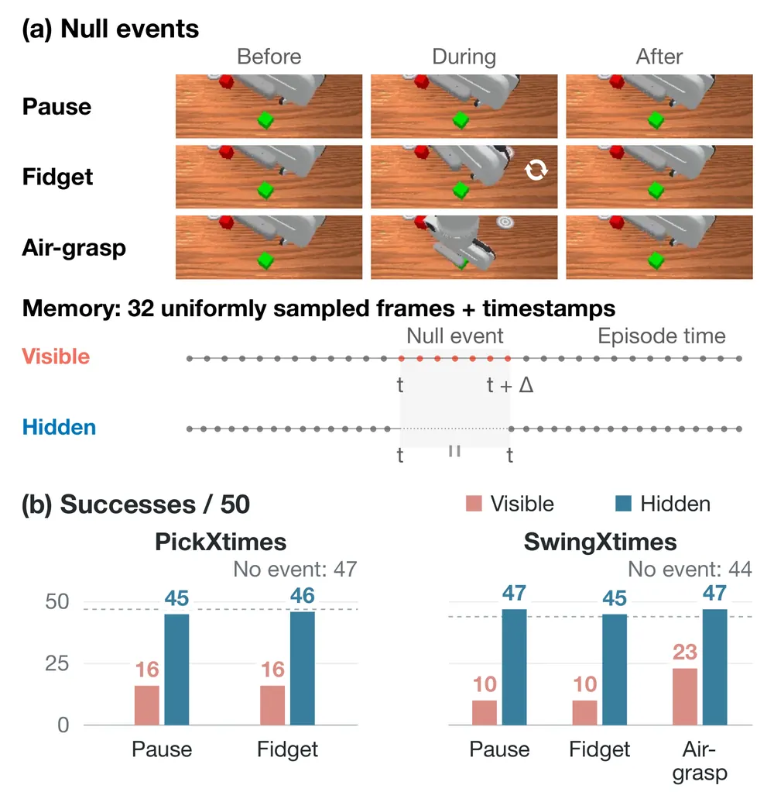
무슨 문제인가
물체를 세 번 옮긴 뒤 버튼을 누르는 과제처럼 현재 장면만으로 진행 정도를 알 수 없는 과제에서는 policy가 지나온 과정을 기억해야 함. 그래서 memory를 붙인 VLA가 늘고 있고, 가장 흔한 방식은 episode 전체에서 frame을 시간 간격대로 고르고 각 frame에 time step을 붙여 두는 것임. 실제 로봇은 planner나 운영자를 기다리며 멈추거나 손목을 움직였다가 제자리로 돌아오는 일이 잦음. 이런 구간은 시간을 쓰지만 과제 상태를 바꾸지 않으므로, 시간으로 채운 memory가 이 구간을 진행으로 셀 위험이 있는데 이를 직접 검증한 연구는 없었음.
어떻게 푸나
저자는 과제 상태를 바꾸지 않는 구간을 null event라 부르고, 멈춤(pause), 손목 흔들기(fidget), 물체 위 허공 잡기(air-grasp) 세 가지를 rollout 도중에 끼워 넣음. 같은 null event를 memory에 넣는 visible 조건과, 로봇은 똑같이 움직이되 해당 frame을 memory에서 빼고 time step도 진행시키지 않는 hidden 조건을 같은 episode 50개로 짝지어 비교함. 대상은 RoboMME(기억이 필요한 시뮬레이션 조작 benchmark)의 반복 세기 과제 두 개와, RoboMME가 공개한 π0.5 기반 memory VLA 계열(MME-VLA) 중 가장 강한 FrameSamp-Modul policy임. 이 계열의 memory(FrameSamp)는 32개 frame을 시간 간격대로 뽑고 각 frame에 절대 time step의 sinusoidal encoding을 붙임. 원인을 가리기 위해 time step만 s배로 바꾸는 실험, time encoding을 뺀 모델(NoClock)을 처음부터 학습하는 실험, 다른 memory 설계들과의 비교를 차례로 수행함. 마지막으로 로봇 자세·주변 장면·접촉이 이전 상태로 돌아온 구간을 frame 하나로 합치는 event index를 재학습 없이 test time에 적용함.
결과
- 공개 FrameSamp-Modul policy에서 5초 pause 두 번을 넣으면 PickXtimes 성공이 47회에서 16회로 내려감. SwingXtimes(정육면체를 두 목표 사이로 K번 옮기기)는 44회에서 10회로 내려감. hidden 조건에서는 각각 45회, 47회로 돌아오고, 실패는 대부분 반복을 덜 하고 버튼을 일찍 누른 경우임.
- null event 없이 time step만 1.5배로 늘리면 PickXtimes 성공이 47회에서 18회로 내려가고 실패 32건이 모두 이른 누름임. 0.5배로 줄이면 성공이 24회이고 실패 대부분(23건)이 반복을 더 한 경우임.
- time encoding을 뺀 NoClock도 pause에서 성공이 PickXtimes 42회에서 21회, SwingXtimes 47회에서 14회로 내려감. pause 없이 똑같은 frame으로 된 묶음을 memory 12칸에 끼워 넣기만 해도 PickXtimes 성공이 42회에서 24회로 내려가서, frame이 memory 칸을 차지하는 것만으로 같은 실패가 생김을 보임.
- event index는 time encoding을 유지한 채 처음부터 학습한 CLOCK checkpoint에 test time으로 적용함. 그 결과 pause에서 PickXtimes 17회가 34회로, SwingXtimes 10회가 30회로 오르고, SwingXtimes air-grasp는 13회에서 43회로 오름. null event 없는 PickXtimes는 41회에서 36회로 내려감. pause를 넣은 데이터로 재학습하는 방법은 null event 없는 SwingXtimes 성공을 46회에서 19회로 떨어뜨려 해결책이 되지 못함.
한계
모든 실험이 시뮬레이션이고 null event도 스크립트로 만든 것이라, 실제 배치에서 이런 구간이 얼마나 자주 생기는지는 재지 않음. event index의 검출기는 simulator의 로봇 silhouette, gripper 폭, 외력 신호를 쓰고 판정 기준도 null event를 만든 방식과 같아서, 실로봇에서 쓸 수 있는 방법으로 보인 것은 아님. 인과 분석은 MME-VLA 계열 하나에 집중되어 있고, 대부분 모델은 seed 하나로 학습했으며 같은 조건을 두 번 돌려도 50회 중 8회까지 차이가 났음.
누리랩 연구와의 연결
- robot memory 연구에서 memory가 사건을 세는지 시간을 세는지 가르는 평가 절차(visible/hidden 비교, time step 배율 조정, 똑같은 frame 묶음 삽입)를 바로 가져다 쓸 수 있음. 우리가 만드는 memory VLA를 RoboMME 등에서 평가할 때 같은 probe를 추가할 근거가 됨.
- 이른 버튼 누름이라는 실패가 memory 구성에서 생긴다는 진단은 failure detection/diagnosis 관점과 이어짐. 실로봇 센서로 상태 변화(물체 이동, 접촉)를 검출해 memory를 쌓는 문제는 object-centric representation이나 scene graph 연구와 연결되는 후속 과제임.
2
78점
ExRL: Sample-Efficient Online Adaptation of Long-Chunk Policies via Execution Length Control
RL
relevance 8/10
IEEE 학술지 계열 양식 (추정)
Robotics (cs.RO)
긴 action chunk를 내는 policy를 online RL로 고칠 때, action은 그대로 두고 chunk 중 몇 개를 실행할지만 배우게 해서 필요한 online 데이터를 줄임. 고정된 π0.5를 LIBERO 과제 하나에서 200,000 environment step 안에 성공률 거의 0%에서 90% 넘게 올림.
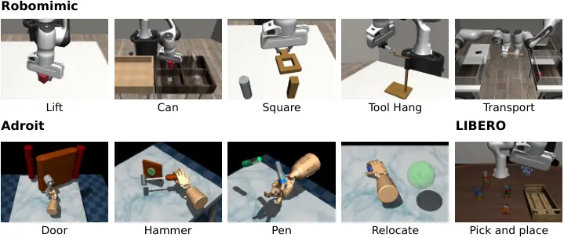
무슨 문제인가
π0.5, π0-FAST 같은 최근 VLA는 한 번에 20~50 step 길이의 action chunk를 예측하고 open-loop로 실행함. 이런 policy도 실제 배치에서는 demonstration 범위 밖에서 실패하므로 online RL로 고칠 필요가 있음. 그런데 chunk 전체나 그 latent noise를 최적화하는 기존 RL은 chunk가 길수록 최적화할 차원이 커져서 online 데이터가 많이 듦. 실로봇에서는 데이터 수집이 느리고 비싸므로, chunk 길이와 무관하게 차원이 작은 adaptation 방법이 필요함.
어떻게 푸나
ExRL(Execution at the Right Length)은 base policy를 고정하고, 예측된 chunk의 앞쪽 몇 개를 실행할지 정하는 작은 policy만 학습함. 입력은 현재 state와 base policy가 낸 chunk이고, 출력은 1부터 H(chunk 길이) 사이의 정수 k임. 로봇은 앞의 k개 action을 실행한 뒤 새 state에서 base policy에 다시 chunk를 요청함. k개 step 동안의 reward를 할인해 더하고 다음 state 가치는 γ^k로 할인하는 duration-aware TD target으로 critic을 학습함. 구현은 critic만 쓰는 ExRL-Q와 discrete SAC를 쓰는 ExRL-SAC 두 가지이고, 둘 다 CQL(conservative Q-learning)로 과대평가를 억제함. 선택 사항으로 성공한 online rollout을 H-step 단위로 잘라 base policy를 behavior cloning으로 다시 학습시킬 수 있음(Online BC). 사람 demonstration도 임의 구간을 가상의 chunk로 보고 길이별 prefix를 replay buffer에 넣어 쓸 수 있음.
결과
- LIBERO(시뮬레이션 조작 과제 모음)의 한 과제에서 chunk 길이 50인 고정 π0.5의 성공률이 200,000 environment step 안에 거의 0%에서 90% 넘게 오름. 같은 방식이 π0, π0-FAST, world action model인 Cosmos Policy에도 그대로 적용됨.
- Robomimic Tool Hang(도구를 고리에 거는 장기 과제)에서 Diffusion Policy에 ExRL-SAC를 쓰면 성공률이 90%를 넘음. 같은 조건에서 latent noise를 고치는 DSRL, action에 residual을 더하는 ResFiT·DICE-RL 등 다른 baseline은 모두 20% 안팎이나 그 아래에 머묾.
- 실로봇에서 chunk 길이 50인 π0.5를 고정한 채 ExRL-Q로 과제 4개를 학습함. 고정 k 중 가장 좋은 설정 대비 cube 쌓기는 9/20에서 17/20, 옷 접기는 12/20에서 17/20으로 오름. 전원 플러그 꽂기는 10/25에서 22/25, 부품 정리는 완료 단계 69/125에서 104/125로 오름.
- Robomimic Square에서 ExRL-Q가 고른 실행 길이 집합은 그대로 두고 어느 state에 어느 길이를 쓸지만 무작위로 뒤섞으면 Diffusion Policy 성공률이 95.8%에서 37.5%로 내림. 어떤 길이를 쓰는지보다 언제 쓰는지가 성능을 정한다는 해석을 뒷받침함.
한계
실로봇 실험은 base policy를 고정한 채로만 했고 Online BC를 쓰지 않아, base policy가 내지 못하는 action은 만들 수 없음. 과제마다 따로 학습했고 multi-task 학습, 처음 보는 과제로의 일반화, real-time chunking 같은 비동기 추론과의 결합은 시험하지 않음. 시뮬레이션 base checkpoint는 RL로 오를 여지가 있는 것을 일부러 골랐으므로, 이미 잘 학습된 policy에서 이득이 얼마인지는 본문에서 확인 불가임.
누리랩 연구와의 연결
- VLA를 다시 학습하지 않고 실행 시점에 언제 replanning할지만 배워 성능을 올린 사례임. test-time optimization과 VLA online adaptation 연구에서 action 수정 계열 방법과 비교할 baseline으로 쓸 수 있음.
- 학습된 policy가 물체 근처에서 짧게 실행하고 부적절한 chunk를 거르는 행동을 보임. 이 critic 값을 chunk 단위 failure detection이나 recovery 시점 판단 신호로 쓰는 방향을 시험해 볼 수 있음.
3
74점
LaST0.5: A Generalist World Action Model with Interaction-Centric Latent Reasoning
World Model
relevance 9/10
Robotics (cs.RO)
video world model이 예측한 미래 장면과 action 생성 사이에, 로봇과 물체의 접촉에 맞춘 latent 단계를 끼운 World Action Model을 제안함. 실로봇 양팔 과제 4개 평균 성공률이 63.8%로 π0.5의 52.5%보다 높음.
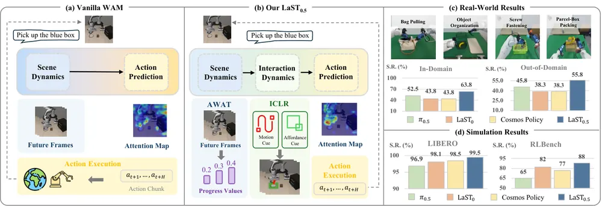
무슨 문제인가
World Action Model(WAM: 미래 장면 예측과 로봇 action 생성을 함께 하는 policy)은 미래 frame을 먼저 만들고 inverse dynamics로 action을 구하거나, 둘을 한 모델에서 같이 예측함. 두 방식 모두 장면 전체의 변화를 맞히도록 학습된 표현을 action 생성에 그대로 넘김. 저자들은 이 표현이 배경 같은 넓은 장면 특징에 끌려서 gripper와 물체 사이의 국소 접촉 정보를 덜 담는다고 봄. 또 world model이 그린 미래가 틀리면(예: 그릇을 못 집은 장면) 그 미래에 맞춘 action이 closed-loop에서 오류를 쌓음.
어떻게 푸나
LaST0.5는 world expert, latent expert, action expert 셋을 Mixture-of-Transformers 안에 두고 미래 영상, latent, action 순서로 추론함. world expert는 Cosmos-Predict2.5-2B이며 과거 5 frame과 지시문을 받아 미래 12 frame을 denoising으로 만듦. latent expert(Janus에서 초기화)는 learnable query로 이 미래 표현에서 4 frame 구간마다 하나씩, 모두 3개의 latent token을 한 번에 뽑음. 학습 target은 구간 끝 frame에 end-effector 궤적을 투영한 2D 곡선과 Grounding DINO로 찾은 대상 물체 box를 그려 넣고 SigLIP으로 encoding한 값이며, cosine loss로 맞춤. 이 그림 표시는 학습 데이터 준비 때만 쓰고 추론 때는 쓰지 않음. action expert는 미래 장면과 latent를 받아 flow matching으로 12 step action chunk를 출력함. AWAT(Adaptive World-to-Action Transfer)는 world expert feature 위의 value head로 구간별 진행도(episode 안에서의 시점 비율)를 예측하고, 진행도가 오르는 구간의 action만 실행함. 진행도가 내려가면 실행을 멈추고 다시 관측하며, 첫 구간부터 이전 값보다 낮으면 미래를 여러 개 sampling해 value가 가장 높은 것을 고름.
결과
- 실로봇 Tianji Marvin 양팔 과제 4개(가방 지퍼 잠그기, 물건 정리, 나사 체결, 상자 포장)에서 과제당 20회 평가함. 전체 과제 완료 기준 평균 성공률이 π0.5 52.5%, Cosmos Policy 43.8%, LaST0(latent 시공간 chain-of-thought를 쓰는 이전 VLA) 43.8% 대비 63.8%임. 나사 삽입 단계 성공률은 50%로 π0.5의 30%보다 높음.
- 위치를 바꾼 out-of-distribution 평가(가방, 정리 과제 2개)에서 평균 성공률이 π0.5 15%, Cosmos Policy 17.5% 대비 40%임. 물체를 바꾼 조건에서는 π0.5와 같은 55%임.
- RLBench(시뮬레이션 Franka 조작 과제, 여기서는 10개 선택) 평균 성공률이 이전 최고인 LaST0 82%, Cosmos Policy 77% 대비 88%임(3회 실행 평균, 표준편차 3.0). AWAT를 빼면 85%임.
- LIBERO-Spatial은 시뮬레이션 조작 benchmark LIBERO의 4개 suite 중 하나임. 여기서 latent target의 궤적 곡선과 물체 box를 모두 빼면 성공률이 99.6%에서 98.6%로 내리고, latent expert 자체를 빼면 97.8%로 내림. LIBERO 4개 suite 평균은 99.5%로 Cosmos Policy 98.5%보다 높음.
한계
LIBERO 수치는 학습 중 가장 좋았던 값이고 반복 실행 평균이 아니며, 이미 99%대라 ablation 차이가 1퍼센트포인트 안팎임. RLBench의 AWAT 유무 차이(88% 대 85%)는 표준편차 3.0과 비슷한 크기임. 14k시간이 넘는 로봇 데이터 사전학습의 기여와 latent expert의 기여를 나눈 실험, 추론 속도나 resampling 비용, 코드 공개 여부는 본문에서 확인 불가함.
누리랩 연구와의 연결
- 진행도 value가 내려가면 실행을 끊고 미래를 다시 sampling하는 AWAT는 world model 기반 failure detection과 test-time 재계획의 간단한 형태임. 우리 failure detection/recovery 연구에서 진행도 회귀 기준의 baseline으로 쓸 수 있음.
- 궤적과 affordance box를 그려 넣은 frame을 latent target으로 쓰는 방식은, world model 표현을 manipulation에 필요한 접촉 영역으로 좁히는 방법임. object-centric 표현을 VLA에 넣는 연구와 비교 대상이 됨.
4
74점
DexSeed: Expanding Human Hand-Object Interactions into Robot Demonstrations for Dexterous Policy Learning
Manipulation
relevance 9/10
ICRA·IROS·RA-L 계열 양식 (추정)
Robotics (cs.RO)
사람 손-물체 상호작용 19개 sequence를 잡는 방식(grasp)은 유지한 채 물체 모양과 팔 궤적을 바꿔 시뮬레이션에서 실행시키고, 성공한 rollout 25,270개로 dexterous VLA를 학습함. 이 데이터만으로 학습한 VLA는 layout·모양·외관이 모두 처음인 시뮬레이션 조건에서 성공률 91.25%, 실로봇 8개 grasp mode 평균 성공률 55%를 보임.
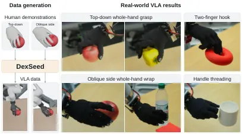
무슨 문제인가
dexterous hand용 VLA를 학습하려면 팔과 손가락 동작, 카메라 관측, 언어 지시가 짝지어진 demonstration이 많이 필요함. 기존 demonstration 생성 방법(MimicGen, DexMimicGen 등)은 teleoperation으로 모은 시연을 출발점으로 삼는데, 관절이 많은 손을 원격 조종하며 접촉을 유지하는 일은 비용이 큼. 사람 손-물체 dataset(GRAB 등)을 로봇으로 옮기는 retargeting과 physics-based imitation 연구도 있지만, 주로 주어진 상호작용 하나를 재현하는 데 그침. VLA 학습용으로 쓰려면 물체 모양과 집고 놓는 위치를 바꿔도 같은 grasp가 유지되고, 팔 추종 오차가 있어도 실제로 실행되는 데이터여야 함.
어떻게 푸나
DexSeed는 사람 sequence를 grasp mode별로 묶고, 각 sequence를 다양한 로봇 demonstration으로 늘린 뒤 시뮬레이션에서 실행 가능한 것만 남김. 먼저 물체가 움직이기 시작하는 frame에서 손가락 굽힘, 관절 위치, 물체 표면까지의 벡터 등을 담은 170차원 grasp descriptor를 계산하고, 거리 기준으로 묶어 8개 대표 mode를 사람이 고름. mode마다 GPT로 잡는 방법을 설명하는 문장을 만들고, 같은 mode의 데이터는 모두 이 문장을 공유함. 다음으로 InteractionMesh retargeting으로 손 landmark 21개와 물체 표면 anchor를 Delaunay 사면체로 연결함. 각 꼭짓점의 이웃 대비 상대 위치(Laplacian coordinate)가 사람 시연과 같아지도록 Wuji 로봇 손의 wrist pose와 20-DoF 손가락을 최적화함. 다른 물체로 옮길 때는 Diff3F 특징으로 대응점을 찾아 대상 물체를 정렬함. 이어 시작 wrist pose, 물체 위치, 놓을 위치를 샘플링해 접근·집기·운반·놓기·후퇴 궤적을 만들고, IK 해가 없는 것은 버림. Franka 팔은 이 관절 궤적을 PD 제어로 따라가고, RL로 학습한 손가락 policy가 542차원 관측을 받아 20차원 residual action을 냄. 성공한 rollout을 실제 작업 공간을 복원한 3D Gaussian Splatting 장면에서 head-view와 wrist 카메라 영상으로 렌더링하고, 행동·grasp 설명과 짝지어 LingBot-VLA를 fine-tuning함.
결과
- 팔을 붙인 채 평가한 physics-based 실행(FR3 팔이 wrist 궤적을 추종)에서 성공률이 95.50%임. 같은 policy를 떠 있는 손(floating hand)으로 학습한 w/o Arm 변형은 28.02%이고, 사람 손 시연을 물리 시뮬레이션에서 로봇 손으로 옮기는 기존 방법인 ManipTrans는 34.25%, Dexplore는 24.81%임. 이 세 방법은 떠 있는 손으로 평가하면 71.32~98.04%여서, 팔 추종 오차를 학습에 넣은 것이 차이를 만든 것으로 보임.
- 시뮬레이션 pick-and-place에서 layout·물체 모양·외관이 모두 처음인 조건(grasp mode 8개 × 10회 = 80회)의 VLA 성공률이 91.25%임. 같은 VLA를 ManipTrans로 만든 데이터로 학습하면 51.25%, Dexplore 데이터는 32.50%, 물리 실행 없이 kinematic reference를 렌더링한 데이터는 5.00%임.
- grasp 설명 문장을 빼고 과제 지시만 주면 같은 조건 성공률이 70.00%로 내림. 같은 사과에 G1(비스듬히 옆에서 손 전체로 잡기)과 G4(위에서 손 전체로 잡기) 지시를 줬을 때 10회 모두 요청한 grasp에 더 가까운 손가락 자세가 나왔고, 설명이 없으면 10회 모두 G1 쪽으로 감.
- 실로봇(Franka 팔 + Wuji 손)에서 mode마다 물체 1개로 10회씩 평가함. 성공률은 mode별로 20%(handle threading)에서 80%(two-finger hook) 사이이고 8개 평균은 55%임. 실로봇 action demonstration은 쓰지 않음.
한계
실로봇 평가는 mode당 물체 1개, 10회뿐이라 처음 보는 물체로의 일반화는 실로봇에서 보이지 않음. 원천 데이터는 GRAB의 pick-and-place 19개 sequence이고, 대표 mode 선택은 사람이 함. 과제가 집고 옮기기에 한정되어 in-hand manipulation이나 양손 작업은 다루지 않았고, source sequence마다 손가락 policy를 따로 학습해야 함.
누리랩 연구와의 연결
- dexterous manipulation용 VLA 데이터를 teleoperation 없이 사람 시연과 시뮬레이션, 3DGS 렌더링으로 만드는 경로를 보임. 손 장착 VLA나 grasp 조건부 policy 연구에서 데이터 생성 기준선으로 쓸 수 있음.
- 운동학적으로 맞는 reference도 팔 추종 오차가 들어가면 실패한다는 결과(kinematic 데이터 5.00%, w/o Arm 28.02%)는 failure detection에서 실행 단계 실패 원인을 나눌 때 참고가 됨.
5
74점
OnlyAct: Extracting Action Representations from Foundation Models for World Models
World Model
relevance 8/10
NeurIPS 2026 채택
Computer Vision and Pattern Recognition (cs.CV)
action label 없는 영상에서 action을 뽑을 때 encoder를 처음부터 학습하지 않고, 사전학습된 V-JEPA 2를 contrastive 학습으로 action 쪽으로 조정함. 연속 action dataset 12개의 linear probe 평균 R²가 0.490으로, 기존 latent-action 모델 최고값 0.211보다 높음.
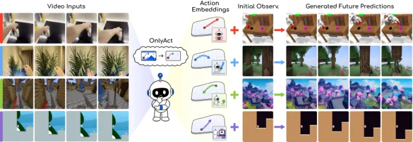
무슨 문제인가
action-conditioned video world model을 학습하려면 action label이 필요하지만, label이 붙은 영상은 적고 로봇 관절각과 게임 입력처럼 형식도 서로 다름. 그래서 Genie, AdaWorld 같은 latent-action 모델은 label 없는 영상의 프레임 쌍에서 latent action을 스스로 학습함. 이 모델들은 이전 프레임과 latent로 다음 프레임을 복원하게 하고, latent 크기를 작게 제한해 장면 정보가 latent에 들어가지 않게 함. 이 제한을 조이면 action의 세밀한 차이가 사라지고 풀면 장면 정보가 새어 들어가며, 처음부터 학습한 encoder는 학습 때 못 본 domain에 잘 일반화되지 않음.
어떻게 푸나
OnlyAct는 V-JEPA 2(대규모 영상으로 사전학습된 ViT-L video encoder)를 action encoder로 씀. 두 프레임을 2-frame clip 하나로 묶어 encoder에 넣고, 출력 token을 평균한 뒤 고정된 random projection으로 640차원으로 줄이고 정규화함. 사전학습 가중치는 고정하고 LoRA adapter만 contrastive loss(InfoNCE)로 학습함. positive는 optical flow로 찾은 움직이는 영역을 잘라 다른 장면의 배경 위 다른 위치에 붙여 만들어서, 움직임은 같고 장면은 다르게 함. 카메라가 움직이는 영상에서는 이 방식이 성립하지 않아 같은 프레임 쌍에 색 변환만 다르게 준 것을 positive로 씀. hard negative는 같은 영상의 겹치지 않는 다른 시간 구간에서 뽑아, 장면은 같고 움직임은 다른 쌍으로 씀. 학습이 끝난 encoder를 고정하고, 연속 프레임 쌍마다 뽑은 action embedding을 조건으로 AdaWorld 구조의 autoregressive video world model을 학습함. 데모 영상의 action을 새 장면에 그대로 옮기거나(action transfer), 소량의 label로 실제 action을 이 공간에 대응시켜 조종함(real-action control).
결과
- encoder 학습에 쓴 168K 프레임 쌍으로 비교 모델도 다시 학습해 같은 조건에서 비교함. linear probe로 실제 action을 맞히는 실험에서 평가 dataset 13개 중 연속 action이 있는 12개의 평균 R²가 OnlyAct 0.490, DreamDojo(기존 latent-action 모델 중 최고) 0.211, AdaWorld 0.067임. 나머지 하나인 Procgen은 이산 action이라 평균에서 빠짐. 13개 중 10개 dataset은 encoder 학습 때 못 본 것임.
- 같은 조건에서 adaptation 전의 V-JEPA 2는 평균 R² 0.347이고, RoboCasa에서 -0.368로 내려감. adaptation 후 RoboCasa는 0.322로 오름. 장면 정보 누출 LPIPS(action embedding만으로 다음 프레임을 복원한 값, 높을수록 누출이 적음)는 OnlyAct 0.304로, adaptation 전 V-JEPA 2의 0.275보다 높고 DreamDojo 0.299와 비슷함.
- 같은 world model 구조와 data로 학습해, 한 영상의 action으로 다른 장면을 움직인 뒤 생성 영상과 원본의 optical flow 방향 cosine을 잼. encoder가 못 본 RLBench(시뮬레이션 로봇 조작 benchmark)에서 OnlyAct 0.686, DreamDojo 0.572이고, 5개 설정 모두에서 OnlyAct가 가장 높음.
- 소량 label로 fine-tuning한 뒤 지시한 action이 생성 영상에 나타나는지 재는 Follow 점수가 4개 domain(DMLab, Minecraft, Habitat, nuScenes 자율주행 영상) 모두에서 가장 높음. nuScenes에서 0.928 대 DreamDojo 0.722임. Habitat에서는 Control 점수(지시한 action과 다른 action으로 생성한 영상의 PSNR 차이)의 차이가 noise 범위 안임.
한계
모든 평가가 영상 생성과 probe 같은 offline 실험이고, 실로봇 policy나 closed-loop 제어 결과는 없음. world model 학습과 fine-tuning은 계산량 때문에 run 하나씩만 돌려서 학습 seed에 따른 분산은 보고되지 않음. 장면 교체 positive는 카메라가 고정된 영상에서만 쓸 수 있어, 주행이나 1인칭 영상에서는 색 변환만으로 장면 불변성을 학습함.
누리랩 연구와의 연결
- world model과 VLA를 action label 없는 대규모 영상으로 사전학습할 때 latent action encoder를 고르는 기준이 됨. 사람 영상과 로봇 영상의 action을 한 공간에 놓는 cross-embodiment 실험의 출발점으로 쓸 수 있음.
- action 표현력, 장면 누출, action transfer 세 축의 평가 방식은 다른 latent action이나 world model 조건 신호를 비교할 때 그대로 가져다 쓸 수 있음.
6
74점
CIALLO: Learning Shared Intent Representations for Cross-Embodiment Manipulation
Manipulation
relevance 8/10
Robotics (cs.RO)
로봇마다 다른 action 좌표계를 짧은 구간의 공통 intent 표현으로 압축하고 로봇별 embedding으로 다시 풀어내는 action codec CIALLO를 제안함. 새 로봇은 10초 이하 녹화 하나로 embedding만 맞춘 뒤 codec을 고정하고 policy를 학습하며, 실로봇 2대에서 과제 3개씩, 6개 과제·로봇 조합의 평균 성공률이 76.7%로 fully finetuned π0의 70.0%보다 높음.
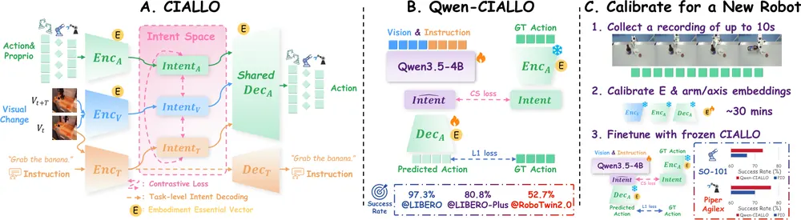
무슨 문제인가
로봇 demonstration에 담긴 조작 지식을 다른 로봇에 옮기려면 서로 다른 control interface를 이어 줄 표현이 필요함. 같은 동작도 end effector 변위나 joint angle로 기록되고, action 차원과 팔 개수와 제어 주기가 로봇마다 다름. 기존 방법은 통합 action 공간에 padding을 하거나 embodiment별 module을 붙여 이질적인 데이터를 받음. 그러나 action 복원만 학습하면 로봇이 달라도 비슷한 행동이 비슷한 표현을 갖도록 강제되지 않음.
어떻게 푸나
CIALLO(Cross-embodiment Intent All in One Space)는 action chunk를 2개 token(폭 512)짜리 intent로 압축하는 action codec임. 입력 경로는 세 개임. 첫째는 action chunk와 proprioception임. 둘째는 frozen DINOv2로 본 현재 frame과 미래 frame의 변화임. 셋째는 frozen BERT로 읽고 현재 frame으로 grounding한 instruction임. 세 경로의 intent는 InfoNCE contrastive loss로 맞추고, 하나의 공유 action decoder가 각 intent에서 실제 action을 L1 loss로 복원하게 함. 로봇마다 128차원 essential vector E와 arm·axis embedding을 두고, 이를 conditional normalization으로 encoder와 decoder에 넣음. decoder는 목표 실행 시각과 action schema(출력할 action 차원과 팔·축 구성)를 입력으로 받아 차원, 제어 주기, 단일·양팔 구성이 달라도 같은 가중치로 출력함. 각 action 값은 [-1,1]의 256개 bin에 대한 softmax 기댓값으로 한 번에 계산함. policy인 Qwen-CIALLO는 Qwen3.5-4B가 관측과 instruction에서 intent를 예측하고, frozen action encoder의 intent와 cosine loss로, 복원 action과 L1 loss로 학습함. 새 로봇은 공유 가중치를 고정한 채 E와 arm·axis embedding만 10초 이하 녹화 하나로 약 30분(GPU 1장) 맞추고, 이후 codec 전체를 고정함.
결과
- 실로봇 SO-101과 단일팔 Piper(둘 다 pretraining에 없던 구성)에서 과제당 demonstration 20개, 평가 20회로 3개 과제를 비교함. 6개 과제·로봇 조합 평균 성공률은 calibration 후 codec을 고정한 Qwen-CIALLO가 76.7%, fully finetuned π0가 70.0%임. 얇은 드라이버를 잡아 목어를 치는 과제에서 70% 대 35%(SO-101), 40% 대 20%(Piper)로 차이가 났고, 물병 놓기는 π0가 5~10퍼센트포인트 높았으며 맥주 따르기는 같음.
- essential vector가 실제로 쓰이는지 보려고 held-out 2,048개 샘플에서 다른 로봇의 E로 바꿔 넣음. action에서 action을 복원하는 MAE가 0.00761에서 encoder만 바꾸면 0.04506, decoder만 바꾸면 0.19124로 오름. 시각 intent 경로는 encoder E만 바꿀 때 0.01853에서 0.02189로 덜 오름.
- LIBERO(시뮬레이션 조작 과제 4개 suite) 평균 성공률은 policy 10k step 학습으로 97.3%이며, 30k step을 쓴 CLAP-RF의 97.2%, OpenVLA-OFT의 97.1%와 거의 같음. 같은 checkpoint를 추가 학습 없이 LIBERO-Plus(카메라·조명·배경 등 7종 교란을 넣은 LIBERO)에 넣으면 80.8%로 DreamWAM의 74.6%보다 높음.
- RoboTwin 2.0(양팔 시뮬레이션 과제 50개) clean-to-clean 조건에서 50개 과제를 함께 학습한 checkpoint 하나가 52.7%로, 함께 학습한 StarVLA 46.5%, 과제별로 학습한 π0 46.4%보다 높음.
한계
실로봇 실험은 로봇 2대, 과제 3개, 조건당 20회라 통계적 차이를 말하기 어렵고, π0와의 비교는 backbone·pretraining·finetuning 방식이 모두 달라 codec의 효과만 떼어 보여 주지 못함. 시뮬레이션에서는 action decoder도 함께 finetuning해서, codec을 고정한 채 쓰는 조건은 실로봇에서만 확인됨. LIBERO 비교는 baseline마다 seed 수와 출처가 다르고 Qwen-CIALLO는 seed 1개 결과이며, 코드 공개 주소는 본문에서 확인 불가함.
누리랩 연구와의 연결
- VLA의 action head를 로봇별 embedding과 공통 intent로 나누는 설계라, 새 로봇에 VLA를 옮길 때 action 표현만 짧게 calibration하는 manipulation 실험의 비교 대상으로 쓸 수 있음.
- action, 시각 변화, grounding된 언어가 같은 intent 공간에 놓이므로, 예측 intent와 관측된 시각 변화 intent의 불일치를 failure detection 신호로 쓰는 실험을 해 볼 수 있음.
7
74점
UGG: Unified Generative Geometry Model
3D Vision
relevance 7/10
NeurIPS 2026 채택
Computer Vision and Pattern Recognition (cs.CV)
RGB video, depth, camera pose를 한 diffusion 모델에서 같이 다루고, 어떤 modality를 noise로 비우느냐로 영상 생성과 기하 추정을 모두 처리함. 첫 프레임과 마지막 프레임만 주는 RealEstate10K(실제 촬영 영상 데이터셋) camera pose 추정에서 translation 방향 오차가 가장 좋은 baseline의 39.8도에서 8.3도로 내려감.
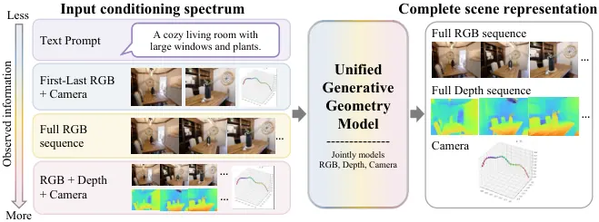
무슨 문제인가
장면의 depth와 camera pose를 추정하는 feedforward 모델은 한 번에 정답 하나만 내놓으므로, 관측이 적거나 학습 분포를 벗어나면 틀리기 쉬움. 반대로 video generation 모델은 빠진 장면을 그럴듯하게 채우지만 3D 기하와 맞지 않는 영상을 만들기도 함. 두 계열을 잇는 기존 연구(Geo4D, One4D 등)도 입력과 출력 방향이 정해져 있어서, 생성과 추정을 같은 장면 모델의 서로 다른 질의로 다루지 못했음. 또 기하 추정 모델은 RGB, depth, pose가 모두 갖춰진 데이터를 요구하는 경우가 많음.
어떻게 푸나
UGG(Unified Generative Geometry model)는 프레임마다 RGB, depth, camera를 같은 해상도의 이미지 형태로 맞춤. camera는 픽셀마다 시선 방향과 moment를 담은 6차원 Plücker ray map으로 바꿈. 세 modality의 token은 modality별 projection과 feed-forward layer를 따로 가지고, self-attention만 공유하는 mixture-of-transformers에 들어감. 각 token은 modality와 시간 위치마다 다른 noise level을 가지며, 이는 token이나 frame마다 noise level을 따로 주는 Diffusion Forcing을 modality 축으로 넓힌 것임. 관측된 token은 noise 0으로 고정하고 빠진 token만 denoise하므로, 마스크 패턴만 바꿔서 text-to-4D, camera 조건 영상 생성, depth와 pose 추정을 같은 모델로 수행함. 학습에서는 데이터에 없는 modality를 loss에서 빼므로 RGB와 pose만 있는 RealEstate10K 같은 데이터도 함께 씀. 추론에서는 후보 장면을 최대 16개 뽑음. 관측 RGB에서 RAFT optical flow로 얻은 대응점과 각 후보의 depth, pose가 얼마나 맞는지 재서 가장 잘 맞는 후보를 고름(test-time search, TTS). 모델은 Wan2.2-TI2V-5B에서 시작해 8개 데이터셋의 50프레임 288×384 clip으로 fine-tuning함.
결과
- 첫 프레임과 마지막 프레임만 주는 sparse camera pose 추정에서 RealEstate10K translation 방향 오차(tAE)가 UGG 단일 sample 8.260도, TTS 3.475도임. 가장 좋은 baseline인 Aether는 39.834도임. 5개 데이터셋 모두에서 tAE와 회전 오차가 baseline보다 낮음.
- 전체 video를 주는 dense pose 추정에서 ScanNet++ 궤적 오차(ATE)가 Geo4D의 0.190에서 0.087로 내려감. sparse depth 추정의 ScanNet++ Abs Rel(상대 depth 오차)은 가장 좋은 baseline Marigold 0.169 대비 UGG 0.101, TTS 0.082임.
- 우세가 고르지는 않음. dense depth에서 Sintel Abs Rel은 Geo4D 0.247, UGG 0.303이고 7-Scenes도 Geo4D가 앞섬. 2-view camera 조건 생성에서 DL3DV PSNR은 diffusion 기반 novel view synthesis 모델 SEVA 17.61, UGG 16.61임.
- Wan2.1-1.3B로 한 ablation에서 RGB 생성 학습을 빼면 KITTI depth Abs Rel이 0.152에서 0.322로 오름. depth 정답이 없는 RealEstate10K를 학습에 더하면 Bonn Abs Rel이 0.239에서 0.135로 내려감.
한계
TTS 선택 기준은 RGB 재투영 오차라서 정답과 어긋날 때가 있음. 같은 16개 후보 중 정답 대비 오차가 가장 작은 것을 고르는 oracle과의 차이가 커서, 예를 들어 RealEstate10K sparse tAE는 TTS 3.475도, oracle 1.550도임. dense depth 일부와 2-view novel view synthesis에서는 전용 모델이 더 좋음. 해상도가 288×384로 낮고, 로봇 과제나 실시간 추론 비용은 다루지 않음.
누리랩 연구와의 연결
- RGB, depth, camera를 같이 생성하는 모델은 geometry를 갖춘 world model로 쓸 수 있음. 손목 카메라 몇 장만 있는 manipulation 장면에서 depth와 pose를 보완하는 용도로 시험해 볼 만함.
- 여러 후보를 뽑고 관측 영상과의 일치도로 고르는 TTS는 test-time optimization의 사례임. 같은 verifier 점수가 낮은 경우를 기하 추정 실패 감지 신호로 쓰는 실험으로 이어질 수 있음.
8
72점
From Video Frames to Robot Meta-Frames: A Unified Latent Interface for World Action Models
World Model
relevance 10/10
CoRL 2026 채택
Computer Vision and Pattern Recognition (cs.CV)
video diffusion model 기반 World Action Model에 로봇 신호를 넣을 때, 신호마다 latent frame을 하나씩 쓰지 않고 DCT 주파수 대역에 나눠 담은 frame 하나로 합침. RoboCasa에서 frame 수를 11개에서 8개로 줄여 추론 지연을 39% 줄이면서 성공률은 67.1%에서 68.9%로 오름.
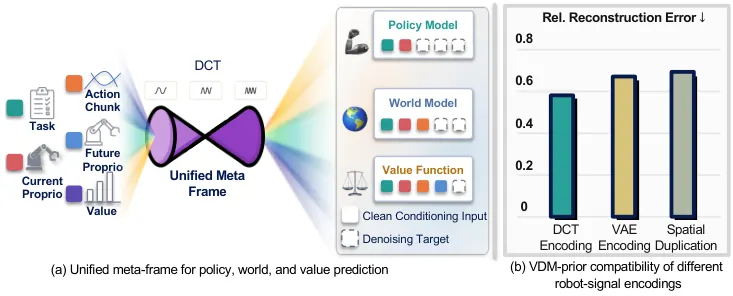
무슨 문제인가
World Action Model(WAM)은 사전학습된 video diffusion model(VDM)을 고쳐 행동과 미래 관측을 함께 예측하는 모델임. 이때 proprioception, action, value 같은 저차원 로봇 신호를 자연 영상으로 학습된 latent 공간에 넣어야 함. Cosmos Policy는 신호마다 값을 공간에 복제한 latent frame을 하나씩 추가함. 그래서 sequence가 길어지고 attention 비용이 제곱으로 늘어남. DreamZero처럼 전용 action encoder·decoder를 붙이면 사전학습된 backbone을 고쳐야 함. 저자들은 신호를 넣는 방식이 단순한 형식 문제가 아니라, 넣은 latent가 VDM의 사전 분포에 얼마나 맞는지의 문제라고 봄.
어떻게 푸나
먼저 진단 실험으로 표현 방식을 고름. 고정된 Cosmos-Predict2 denoiser가 주입된 latent를 얼마나 고쳐 쓰는지를 상대 복원 오차(denoising residual을 깨끗한 latent 크기로 나눈 값)로 재고, 작을수록 사전 분포에 가깝다고 봄. 이 진단에서 주파수 영역 표현이 공간 복제나 VAE 인코딩보다 오차가 작게 나옴. 이를 바탕으로 MetaWAM은 모든 로봇 신호를 meta-frame이라는 latent frame 하나에 담음. task one-hot, 현재·미래 proprioception, action chunk, value는 각각 서로 겹치지 않는 channel 대역의 고정된 DCT 계수 자리에 쓰임. 이 계수에 channel마다 2D inverse DCT를 적용해 공간 latent로 바꿈. 입력 meta-frame(task, 현재 proprioception)은 tokenizer가 원래 비워 두는 맨 앞 latent frame 자리를 재사용하고, 출력 meta-frame이 action·미래 proprioception·value를 예측함. 출력은 2D DCT 후 정해진 자리를 읽어 바로 복원하므로 학습되는 decoder가 없음. 하나의 모델이 band 단위 mask로 각 신호를 조건 입력 또는 denoising target으로 바꿔 가며 policy, world model, value 예측을 함께 학습함.
결과
- RoboCasa(주방 조작 과제 24개, 과제당 demonstration 50개)에서 평균 성공률이 68.9%로, 같은 데이터 조건의 Cosmos Policy 67.1%보다 1.8퍼센트포인트 높음. 3 seed, 총 3600회 평가 기준이며 통계적 유의성 검정은 없음.
- 비교 대상은 DCT 없이 신호를 한 frame의 공간 영역에 나눠 담은 두 변형임. Meta-Quadrants는 신호마다 같은 크기의 영역을 주고, Meta-Compact는 신호 차원에 따라 크기를 달리한 영역을 줌. 같은 8 frame, 같은 지연(0.291초)에서 성공률은 Meta-Quadrants 65.9%, Meta-Compact 68.1%, MetaWAM 68.9%임. 신호별 frame을 쓰는 11 frame 방식은 0.479초이므로 지연 감소는 frame 수를 줄인 데서 옴. 같은 frame 수에서는 DCT 배치가 두 공간 배치보다 성공률이 0.8~3.0퍼센트포인트 높음.
- diffusion noise 수준 σ=1.0에서 고정 denoiser의 상대 복원 오차가 MetaWAM 0.5613, Meta-Compact 0.6234, 신호별 frame 방식 0.6178임. Wan2.1-14B, Wan2.2-5B backbone에서도 다중 신호 배치는 MetaWAM이 가장 낮음.
- 실제 Franka에서 과제 3개(쓸기, 컵 놓기, 블록 쌓기)를 과제당 20회 평가함. 평균 성공률이 분포 내 85.0%, 분포 밖(방해물·배치·배경 변화) 68.3%이고, Cosmos Policy는 78.3%, 63.3%임.
한계
RoboCasa와 LIBERO(조작 과제 suite 4개로 된 시뮬레이션 benchmark)에서 가장 강한 baseline과의 차이가 작음. LIBERO 평균은 98.1%로 Cosmos Policy 98.5%보다 낮고, LIBERO-Plus(교란 7종에 대한 강건성 평가)에서는 배경 변화(72.6%)와 로봇 초기 상태 변화(59.9%)에서 Cosmos Policy보다 낮음. 상대 복원 오차는 저자도 성공률의 정량 예측값이 아니라고 밝힘. 실로봇은 팔 하나에 과제 3개이며, 대역 배치와 loss 가중치는 고정이라 신호 크기가 크게 다르면 다시 맞춰야 함.
누리랩 연구와의 연결
- 사전학습된 video model을 world model 겸 VLA로 쓸 때 action·value 같은 신호를 구조 변경 없이 넣는 방법임. 같은 모델에서 policy, world model, value를 mask로 바꿔 부를 수 있어 test-time planning이나 value 기반 failure detection에 그대로 쓸 수 있는 구조임.
- 고정 denoiser의 상대 복원 오차로 입력 표현이 사전 분포에 맞는지 학습 전에 비교하는 진단은, 우리가 video world model에 새 조건 신호(접촉, 3D 정보 등)를 넣을 때 후보를 고르는 기준으로 쓸 수 있음.
9
68점
How Much of Your VLA Is kNN
VLA
relevance 9/10
CoRL 2026 채택
Robotics (cs.RO)
지금 장면과 가까운 시연 장면을 찾아 그 뒤의 action chunk를 섞어 쓰는 kNN policy만으로, action policy 학습 없이 LIBERO 평균 성공률 91.7%를 얻음. 같은 방법으로 공개 VLA 9개의 성능과 backbone을 비교해, LIBERO 점수 중 시연 검색으로 설명되는 부분을 측정함.
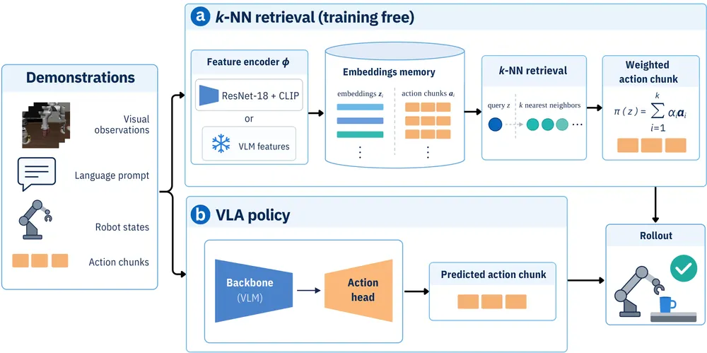
무슨 문제인가
최근 VLA는 LIBERO(Franka 팔 조작 과제를 모은 시뮬레이션 benchmark)에서 95%가 넘는 성공률을 보고함. LIBERO는 과제마다 시연 50개를 주고 정해진 초기 상태에서 평가함. 그래서 높은 점수가 시연을 넘어선 일반화인지 시연을 따라 한 결과인지 가리기 어려움. 실제로 LIBERO-Plus(카메라 시점, 로봇 초기 자세, 언어, 조명, 배경, noise, 배치의 7종 교란을 준 LIBERO)에서는 같은 VLA의 성공률이 크게 낮아짐이 보고됨. 그래서 학습 없이 시연을 찾아 쓰는 것만으로 benchmark 성능이 얼마나 나오는지를 기준선으로 잴 필요가 있음.
어떻게 푸나
저자들은 LIBERO 시연 1693개에서 두 frame마다 관측과 그 뒤의 action chunk를 묶어 약 137k개 항목의 memory를 만듦. 실행 중에는 현재 관측을 같은 공간에 embedding하고 거리가 가장 가까운 항목 k개를 찾음. 거리는 ResNet-18 이미지 특징, robot state, CLIP 언어 embedding, episode 시간, 최근 관측 이력의 거리를 더한 값임. 각 항은 같은 과제 안 거리의 median으로 나눠 단위를 맞춤. 한 시연에서는 항목을 하나만 고르고, 거리에 softmax를 씌운 가중치로 이웃들의 action chunk를 평균해 다음 action으로 출력함. LAC(Local Action Consistency)는 rollout 없이 retrieval key의 질을 재는 지표임. 표현 공간에서 가까운 이웃 k개와의 미래 action 거리를 같은 과제 전체와의 평균 action 거리로 나누고 1에서 뺀 값임. 변형은 이미지 거리만 쓰는 ResNet 변형(k=8), 모든 거리를 쓰는 multimodal 변형(k=13), multimodal 변형의 이미지 특징에 학습한 선형 투영을 붙인 LAC key 변형 세 가지임. 같은 kNN에 VLA의 VLM 은닉 상태를 key로 넣어, 각 VLA backbone을 LIBERO fine-tuning 전후로 비교함.
결과
- LIBERO 4개 suite 40개 과제의 평균 성공률(정책당 2000 rollout)은 multimodal kNN이 91.7%임. π0-FAST 90.6%, SmolVLA 82.2%, π0 71.9%보다 높고, 가장 높은 π0.5의 97.7%보다는 낮음.
- LIBERO-Plus의 고정된 교란 420개에서 multimodal kNN은 82.4%로 VLA 9개 중 7개보다 높음. LIBERO 대비 하락폭은 9.3퍼센트포인트로 평가한 정책 중 가장 작음. VLA-JEPA는 LIBERO 97.2%에서 LIBERO-Plus 74.0%로 내림.
- VLA가 rollout 중 낸 action chunk를 ResNet kNN의 예측과 비교한 R²는 0.63~0.93이며, 절대 자세를 예측하는 X-VLA를 뺀 8개를 비교함. 같은 kNN 예측과 held-out 시연 정답 chunk의 R²는 0.78이고, 8개 중 5개 VLA의 chunk가 이보다 kNN 예측에 더 가까움.
- VLM backbone을 key로 쓴 LIBERO-Plus 검색 성공률은 fine-tuning 후 8개 중 7개 모델에서 오름(VLM을 고정하는 GR00T 제외). LIBERO-Plus에서 4개 모델은 검색만으로 전체 VLA보다 높음(SmolVLA 69.3% 대 27.9%). π0 backbone을 key로 쓴 LIBERO 검색 성공률은 fine-tuning 전 86.9%에서 후 17.9%로 내림.
한계
실험은 LIBERO와 LIBERO-Plus 시뮬레이션뿐이고 실로봇 결과는 없음. LIBERO는 시연 밀도가 높고 LIBERO-Plus 교란은 과제의 해 궤적을 거의 바꾸지 않아 검색 방식에 유리할 수 있다고 저자도 적음. 공개 checkpoint를 그대로 평가해 π0, SmolVLA 등은 원 논문 수치보다 낮게 나왔고, LAC는 비슷한 수준의 key끼리 순위를 잘 가리지 못함(Pearson r=0.78, Spearman ρ=0.61).
누리랩 연구와의 연결
- VLA 연구에서 LIBERO 성능을 주장할 때 함께 보고할 학습 없는 kNN 기준선으로 쓸 수 있음. 평가 코드와 사용한 VLA checkpoint 목록이 공개되어 있음.
- LAC는 rollout 없이 표현이 action과 맞는지 재는 지표라, robot memory 검색 key 설계와 failure detection용 표현 점검에 가져다 쓸 수 있음.
10
68점
Elastic-WAM: Adaptive Spatiotemporal Imagination for Efficient Robot Control
World Model
relevance 8/10
Robotics (cs.RO)
미래 영상과 행동을 함께 denoising하는 World-Action Model에서, 미래 영상을 몇 단계·얼마만큼·어느 영역까지 다듬을지를 상태마다 학습된 함수로 정함. RoboCasa-GR1에서 Joint-WAM보다 성공률은 55.0%에서 57.4%로 오르고 추론 지연은 32.2% 줄어듦.
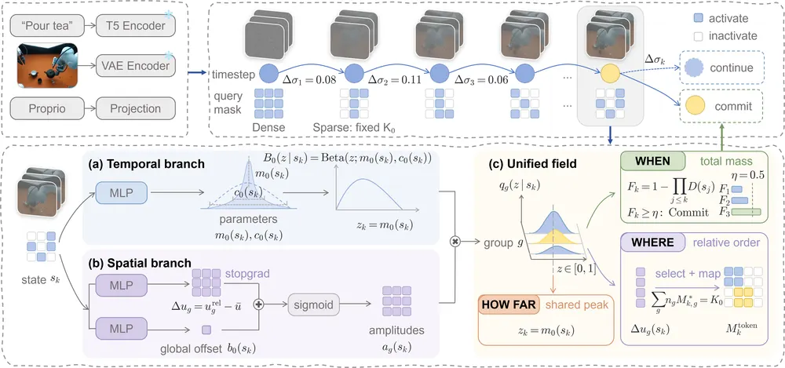
무슨 문제인가
World-Action Model(WAM)은 미래 영상을 예측해 그 표현을 행동 생성의 조건으로 씀. 미래 영상을 diffusion으로 여러 번 denoising해야 해서 추론이 느림. 기존 가속 방법은 미래 영상을 덜 다듬어도 행동이 잘 나온다는 점을 이용하지만, 몇 단계 다듬을지를 과제와 상태에 상관없이 고정함. 저자들은 LIBERO-Plus(카메라·조명·노이즈 등 7종 교란을 건 LIBERO 평가) 과제 10개에서 성공률이 가장 높은 denoising 단계 수가 과제마다 1~4로 다르고, 같은 과제 안에서도 상태마다 다르다는 관찰을 제시함. 행동 token이 미래 영상의 일부 영역에만 attention을 몰아 준다는 관찰도 함께 제시함.
어떻게 푸나
Elastic-WAM은 baseline인 Joint-WAM(미래 영상과 행동을 반복 denoising으로 함께 다듬는 사전학습 WAM)을 그대로 고정하고, 남은 미래 영상 정제 수요를 나타내는 작은 함수만 학습함. 미래 영상 token 196개를 시점과 카메라 경계를 지키는 64개 group으로 나누고, 각 group의 수요를 group별 크기와 공유 Beta 분포의 곱으로 표현함. 이 함수에서 세 가지 결정이 나옴. 전체 수요를 누적한 commit 확률이 0.5를 넘으면 영상 정제를 멈추고(WHEN), Beta 분포의 mode로 다음 denoising 보폭을 정하고(HOW FAR), group별 상대 점수 순으로 정확히 96개 token만 새로 계산함(WHERE). 학습은 보폭 분포, 영역별 상대 점수, 전체 수요의 offset을 차례로 맞추는 세 단계로 나뉨. 보폭과 정지 시점은 여러 후보를 실제로 돌려 최종 행동 오차가 작은 쪽을 정답으로 삼고, 영역 점수는 전체 token을 갱신한 결과를 teacher로 삼아 sparse 갱신 결과를 맞추도록 학습함. 추론 때는 첫 단계만 전체 token을 갱신하고, 이후에는 고른 token만 다시 계산하되 attention은 전체 KV cache를 봄. 영상 정제를 멈춘 뒤에는 cache된 영상 표현으로 행동 denoising만 이어감.
결과
- RoboCasa-GR1(물체 재배치와 서랍·전자레인지 같은 관절 물체 조작을 포함한 탁상 과제 24개 모음)에서 성공률이 Joint-WAM의 55.0%에서 57.4%로 오름. 같은 H800 GPU에서 추론 지연은 572.6ms에서 388.2ms로 줄어듦. 다만 Fast-WAM(331.1ms)보다는 느리고, π0.5 등 VLA(77~82ms)보다 약 5배 느림.
- 같은 RoboCasa-GR1에서 학습된 영역 선택의 효과를 따로 잼. 같은 96 token을 무작위로 고르면 전체 성공률이 57.42%에서 53.83%로 내려감. 갱신 token 수를 128개로 늘린 all-active 설정은 55.17%, 첫 단계의 영상 cache만 재사용하면 54.50%임.
- LIBERO-Plus에서 LIBERO로만 학습한 policy의 평균 성공률이 73.7%로, Joint-WAM 66.3%보다 7.4퍼센트포인트 높음. 정지 시점과 보폭을 모두 고정한 WHERE-only 설정은 71.71%임.
- 실제 양팔 xArm 7 로봇의 4단계 차 준비 과제를 조건마다 20회 시행함. 전체 성공률은 평상 조건과 조명 변화에서 50%로 Joint-WAM의 30%보다 높고, 컵 교체 조건에서는 둘 다 30%임. Fast-WAM은 세 조건 모두 0%임.
한계
LIBERO와 LIBERO-Pro(물체·위치·지시 의미·과제 구성을 바꾼 LIBERO 평가)에서는 Joint-WAM 대비 차이가 평균 0.3~1.3퍼센트포인트에 그치고, 반복 실행에 따른 분산은 보고하지 않음. 지연은 RoboCasa-GR1 한 곳에서만 쟀고, 영상 token 수 96개는 학습되지 않은 외부 설정값임. 실로봇 실험은 과제 1개에 조건별 20회이며, 코드 저장소 주소는 본문에서 확인 불가함.
누리랩 연구와의 연결
- world model 기반 policy에서 상태마다 추론 계산량을 다르게 쓰는 사례임. test-time optimization 연구에서 계산 예산을 언제 더 쓸지 정하는 기준(최종 행동 오차로 학습한 정지 확률)의 비교 대상이 됨.
- 행동에 쓰이는 미래 영상 영역만 골라 갱신하는 구조는, world model 예측 중 어느 부분이 조작에 쓰이는지 보는 분석 도구로 활용할 수 있음.
11
66점
Few-Shot Residual Adaptation of Pretrained Latent World Models
World Model
relevance 8/10
NeurIPS 2026 채택
Robotics (cs.RO)
물체의 무게중심이나 마찰이 바뀌어 planning이 실패할 때, 고정된 latent world model 안팎에 작은 residual 보정 모듈을 붙이고 상호작용 3 episode의 예측 오차로만 학습시킴. 실로봇 상자 밀기에서 무게중심 이동 조건의 성공률이 0%에서 90%로 오름.
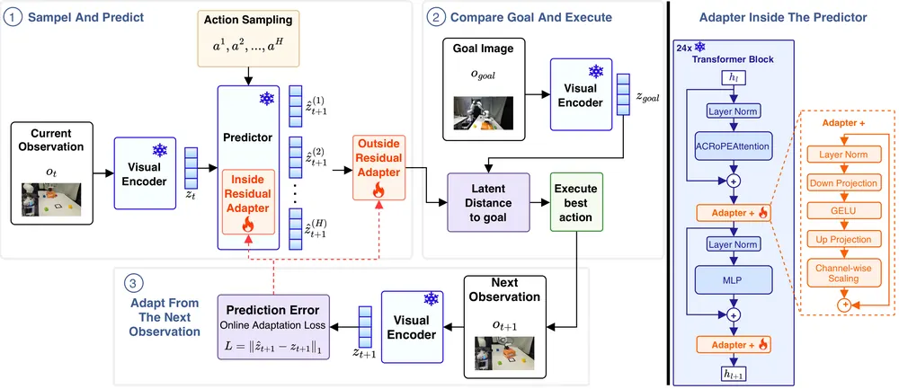
무슨 문제인가
latent world model은 학습 때와 다른 물리 조건에서 쓰이면 같은 행동의 결과를 틀리게 예측하고 planning이 실패함. 상자 안에 숨긴 추로 무게중심을 옮기거나 바닥 절반에 천을 깔기만 해도 과제와 controller가 그대로인데 성공률이 0% 근처로 내려감. 기존 대응은 모델 재학습, 시뮬레이터 기반 물리 파라미터 추정, 학습 때 dynamics randomization 등임. 이 방법들은 데이터가 많이 들거나, 학습 과정이나 dynamics의 파라미터화, 바뀔 조건에 대한 사전 지식을 요구함.
어떻게 푸나
기반 모델은 DUET-DINO(V-JEPA 2-AC 계열로, 측면 카메라와 손목 카메라의 DINOv3 latent를 행동 조건으로 한 step 앞까지 예측하는 모델)임. 계획은 one-step CEM(cross-entropy method)으로 하며, 샘플한 행동마다 다음 latent를 예측하고 목표 이미지 latent와의 거리로 순위를 매겨 실행함. 저자는 encoder, predictor 가중치, CEM controller를 모두 고정하고 보정 모듈 두 종류만 추가함. 첫째는 Adapter+(bottleneck residual branch에 채널별 scale을 곱하는 모듈)임. 측면·손목 두 predictor head의 Transformer block 24개마다 두 곳씩 넣어 총 96개임. 둘째는 predictor가 낸 latent token에 더해지는 token 단위 residual MLP이며 측면·손목 두 카메라가 공유함. 이 두 모듈을 합친 구성을 dual-site adapter라 부름. 두 모듈은 0으로 초기화되어 처음에는 원래 모델과 같고, 학습 parameter는 합쳐서 29.2M으로 predictor의 4.53%임. 첫 3 episode가 끝날 때마다 실제 다음 관측의 latent를 정답으로 하는 L1 예측 오차로 학습하며, reward나 바뀐 물리량은 쓰지 않음. 내부 adapter를 먼저 25 step 학습해 고정한 뒤 외부 MLP를 25 step 학습하는 순차 방식을 씀.
결과
- 실로봇(Franka Panda, 조건당 30회)에서 고정 모델의 성공률은 무게중심 이동에서 0%, 마찰 변경에서 3.3%임. 제안한 dual-site adapter로 3 episode 적응 뒤 각각 90.0%와 100.0%로 오름. 같은 조건에서 LoRA는 30.0%와 66.7%, 전체 fine-tuning은 20.0%와 100.0%임.
- 시뮬레이션(RoboLab 시뮬레이터, 무게중심 이동, seed 3개 각 50회)에서 성공률은 dual-site adapter 56.7%, 내부만 보정한 최선인 LoRA 32.7%, 출력만 보정한 최선인 residual MLP 24.0%임. 두 모듈을 동시에 학습하면 44.0%로 순차 학습보다 낮음.
- 원래 조건 데이터로 같은 절차를 거쳐 학습한 adapter도 무게중심 이동 adapter가 줄인 예측 오차의 95.3%(측면 카메라), 71.7%(손목 카메라)만큼을 줄임. 그런데 무게중심 이동 조건의 성공률은 6.0%로, 무게중심 이동 adapter의 72.0%보다 낮음. 이 비교는 adaptation seed 1개로 50회 평가한 값이라 seed 3개 평균인 56.7%와 다름. 예측 오차를 줄이는 것만으로는 제어 성능이 나오지 않음을 보인 진단임.
- 무게중심 이동 adapter를 원래 조건에 다시 쓰면 성공률이 54.0%로, 고정 모델의 85.3%보다 낮아짐. 시뮬레이션에서 학습한 adapter를 실로봇에 쓰거나 그 반대로 쓰면 성공률은 0~10%임.
한계
과제는 상자 밀기 하나, 물리 변화는 무게중심과 마찰 두 가지이며, 마찰 변경은 실로봇에서만 평가함. 조건마다 adapter를 따로 학습하고, 적응 후 원래 조건으로 돌아가면 성능이 낮아지며 여러 보정을 보관·재사용하는 방법은 없음. adapter가 어떤 물리 정보를 담는지는 저자도 밝히지 못했고, 실로봇은 제어 한 step에 약 28초가 걸림. 본문에 코드 공개 주소는 없음.
누리랩 연구와의 연결
- world model 기반 planning에서 dynamics shift로 생긴 실패를 배포 중 몇 episode의 예측 오차로 복구하는 test-time adaptation 사례임. 예측 오차를 failure detection 신호로 쓰고 같은 신호로 recovery까지 잇는 연구의 baseline이 됨.
- 예측 오차를 비슷하게 줄인 두 adapter의 성공률이 6.0%와 72.0%로 갈린 결과는 world model 평가 지표를 정할 때 참고할 결과임.
12
66점
PhysMoE: Fast Spatial Grounding with Single-Token Coordinate Representation in Modality-Decoupled VLMs
Embodied AI
relevance 7/10
Computer Vision and Pattern Recognition (cs.CV)
embodied VLM이 좌표를 숫자 문자열로 쓰지 않고 좌표 하나를 token 하나로 바로 regression하게 바꿈. 9B 모델의 좌표 출력 처리량이 가장 빠른 비교 모델보다 8.31배 높고, 좌표 grounding 9개 benchmark 평균은 초기화 모델의 64.1에서 74.2로 오름.
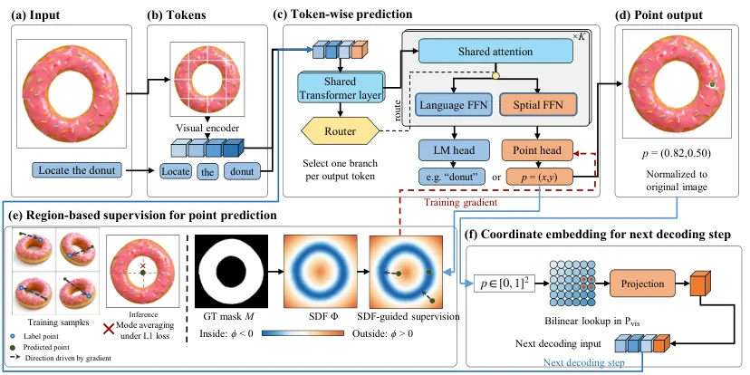
무슨 문제인가
기존 embodied VLM은 "[342, 518]" 같은 좌표를 숫자·쉼표·괄호 token으로 쪼개 한 개씩 생성함. 그래서 점 하나에 8~10번의 decoding이 필요하고, 좌표가 이미지 위치라는 연속성이 token 단위에서 끊김. 또 잡을 수 있는 손잡이나 놓을 수 있는 자리는 영역 안 여러 점이 모두 정답인데, 보통은 영역 중심 한 점에 L1 regression을 걸어 학습함. 이러면 정답 후보가 여러 곳일 때 예측이 그 평균으로 끌려가 영역 밖에 떨어질 수 있음.
어떻게 푸나
PhysMoE는 decoder 아래층을 모든 token이 공유하고, 위쪽 K개 층(K=8)에서만 FFN을 언어용과 좌표용 두 개로 나눔. 이 층들에서 self-attention은 계속 공유하고, 작은 router MLP가 token마다 언어 FFN과 좌표 FFN 중 하나를 고름. 출력도 두 갈래로, 언어 token은 LM head가 vocabulary 위 logit을 내고 좌표 token은 MLP head가 0~1로 정규화된 (x, y)를 바로 regression함. 생성된 좌표를 다음 입력으로 넣을 때는 vision encoder의 학습된 2D positional embedding 격자에서 그 위치를 bilinear 보간으로 읽고 linear layer로 언어 hidden 차원에 맞춤. 영역형 정답에는 마스크로 만든 ESDF(Euclidean Signed Distance Field: 경계까지의 거리, 안쪽은 음수, 바깥은 양수) 지도를 씀. 예측 좌표에서 이 값을 미분 가능하게 샘플링해, 밖이면 거리에 따라 커지는 loss를 주고 안쪽이면 깊이에 따라 0에 가까워지는 작은 loss만 줌. 점·박스만 있는 데이터는 SAM3로 마스크를 만들어 쓰고, 약 1,200만 개 샘플로 두 단계 LoRA 학습을 함.
결과
- 좌표 grounding 9개 benchmark(affordance 지점 찍기, 지시 대상 위치 찾기, 2D 궤적 예측) 평균이 74.2임. 초기화 모델 RynnBrain 1.1-9B는 64.1, 30B MoE인 HY-Embodied-VLM은 69.2임. 다만 PIOBench, RoboRefit 등 일부 과제에서는 다른 모델이 더 높음.
- 좌표 출력 문항 1,000개를 RTX 5090에서 처리한 속도가 9B 기준 초당 23.34개임. 같은 크기에서 가장 빠른 Embodied-R1.5-8B는 2.81개이고, 4B는 31.88개 대 5.28개(RynnBrain 1.0-4B)임.
- 4B 모델에서 데이터와 구조를 같게 두고 중심점 L1 regression을 ESDF loss로 바꾸면 RoboRefit(지시 대상 위치 찾기)이 79.2에서 82.0으로, Part-Affordance(affordance 지점 찍기)가 55.5에서 57.2로 오름.
- 텍스트 답변형 embodied 추론 11개 benchmark 평균은 9B에서 70.9로 초기화 모델의 71.4와 비슷함. 4B는 평균이 61.3에서 62.7로 올랐지만 공간 관계 질의응답 benchmark인 CV-Bench는 86.2에서 78.2로, EmbSpatial은 77.3에서 68.9로 내림.
한계
모든 평가가 정지 이미지 위 benchmark이고 실로봇 실험은 없음. 언어·좌표 FFN 분리가 gradient 간섭을 없앤다는 주장은 같은 조건의 dense decoder와 비교한 ablation이 없어 실험으로 확인되지 않음. 일부 baseline 점수는 다른 논문(HY-Embodied-VLM-1.0)에서 가져왔고, 코드 공개 주소는 본문에서 확인 불가임.
누리랩 연구와의 연결
- VLA가 2D affordance 점이나 end-effector 궤적을 중간 표현으로 쓸 때, 좌표를 token 하나로 내는 방식은 inference 지연을 줄이는 선택지가 됨. 실제 closed-loop 제어 이득은 직접 확인해야 함.
- ESDF loss는 정답이 영역인 manipulation 지점 학습에 그대로 가져다 쓸 수 있고, 3D SDF나 object-centric 표현으로 넓히는 실험의 출발점이 됨.
13
62점
Ego Guidance: Enhancing Robot Policy Learning with Action-Free Human Egocentric Videos
VLA
relevance 9/10
NeurIPS 양식 (추정)
Robotics (cs.RO)
행동 label이 없는 사람 1인칭 영상으로, VLA backbone이 미래 장면의 visual feature를 예측하는 보조 과제를 학습시킴. 예측 대상을 SigLIP2 feature로 두면 LIBERO-Plus 평균 성공률이 76.2%로, 픽셀 복원용 Wan-VAE latent를 예측할 때의 60.0%보다 높음.
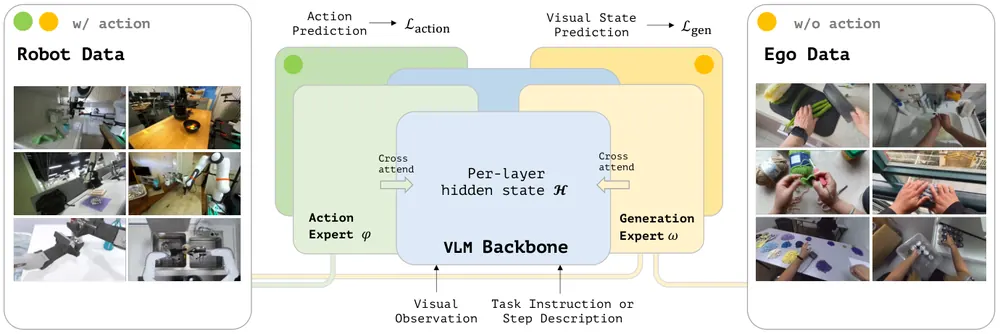
무슨 문제인가
Ego4D 같은 사람 1인칭 영상은 양이 많고 모으기 쉽지만, 로봇이 낼 관절·gripper 명령 같은 action label이 없음. 기존 연구는 영상에서 손 자세나 latent action을 복원해 action label 대신 쓰거나, 미래 영상을 생성하는 World Action Model(WAM)을 policy로 씀. 이 논문은 action을 복원하지 않고도 action-free 영상이 robot policy 학습에 도움이 되는지, 된다면 어떤 예측 대상과 어떤 데이터가 중요한지를 묻는 실험 연구임.
어떻게 푸나
SPAR(Shared Prediction on Action and Representation)는 사전학습된 VLM(Qwen3.5-2B)에 두 개의 transformer expert를 붙인 구조임. 두 expert는 VLM의 layer별 hidden state에 cross-attention하고, 서로는 attention하지 않음. action expert는 현재 관측과 지시문을 받아 flow matching으로 action chunk를 출력함. generation expert는 같은 hidden state에서 action chunk 끝 시점의 미래 카메라 영상을 고정된 encoder(SigLIP2 등)로 뽑은 feature를 예측함. 로봇 데이터는 두 loss를 모두 주고, 1인칭 영상은 generation loss만 줌. 따라서 영상의 효과는 공유 backbone의 표현을 바꾸는 경로로만 action에 전달됨. 학습은 DROID 로봇 데이터와 1인칭 영상으로 함께 사전학습한 뒤, 하위 과제 demonstration으로 fine-tuning하는 2단계임. 추론 때는 generation expert를 떼어 내므로 배포 구조와 비용은 일반 VLA와 같음.
결과
- LIBERO-Plus(LIBERO 과제에 카메라·초기 상태·언어·조명·texture·sensor noise·물체 배치 7종 분포 변화를 준 평가)에서 예측 대상을 비교함. 평균 성공률은 SigLIP2 76.2%, Qwen-ViT 75.6%, DINOv2 74.9%이고, 복원용 Wan-VAE latent는 60.0%임. 미래 1프레임 예측은 74.32%, 4프레임 예측은 74.62%로 차이가 0.30퍼센트포인트임.
- Ego4D 3,976시간을 카메라 움직임 gate와 손 노출 gate로 걸러 975시간을 남김. 거르지 않은 영상을 섞으면 로봇 데이터만 쓴 경우보다 LIBERO-Plus 성공률이 낮고, 두 gate를 통과한 영상은 fine-tuning 16k·20k step에서 로봇 데이터만 쓴 경우를 넘음. 정확한 수치는 그림에만 있고 본문에서 확인 불가임.
- Open-AoE는 8,000개 과제, 약 2,000시간 분량의 clip·caption 약 100만 쌍을 담은 1인칭 영상 데이터셋임. 이 영상을 0, 150, 450, 1,500시간으로 늘리면 LIBERO-Plus 성공률이 계속 오르고, 분포 변화가 없는 LIBERO 성공률은 거의 유지됨. 같은 200K clip 예산 안에서 장면·물체·상호작용 다양성을 높이는 것은 일관된 이득이 없었음.
- 실제 AgileX 양팔 로봇의 과제 5개에서 과제당 10회 평가한 성공 횟수가 20/50으로, π0.5의 22/50과 비슷함. 오이 옮기기 과제의 조명·배경·방해 물체 변화에서는 9·8·5회로 π0.5의 7·7·4회보다 높음. 꽃 건네기 과제의 조명·방해 물체 변화에서는 2·0회로 π0.5의 5·3회보다 낮음.
한계
1인칭 영상을 넣은 효과는 주로 LIBERO-Plus 시뮬레이션에서 보였고, 실로봇에서는 같은 모델의 영상 없는 학습과 비교하지 않아 영상의 기여를 따로 확인할 수 없음. WAM이나 latent action 기반 방법과 직접 비교하지 않았고, 다양성·규모 실험은 저자 스스로 예비 결과라고 밝힘. 실로봇 성능은 π0.5와 비슷한 수준이며, 정밀 grasp·양팔 회전·긴 과제는 두 방법 모두 대부분 실패함.
누리랩 연구와의 연결
- action label 없는 영상을 미래 visual feature 예측으로 VLA backbone에 넣는 방식이라, 사람 영상으로 generalist policy의 시각 강건성을 높이려는 VLA 연구에서 baseline 설계로 쓸 수 있음.
- 미래 feature를 예측하는 generation expert는 추론 때 버려지지만, 남겨 두고 예측한 미래 feature와 실제 관측을 비교하면 failure detection용 world model 신호로 쓸 여지가 있음. 이 용도는 논문에서 다루지 않음.
14
58점
Persistent Metric-Semantic Maritime Scene Memory from Open-Vocabulary 3D Scene Graphs
3D Vision
relevance 8/10
ICRA·IROS·RA-L 계열 양식 (추정)
Computer Vision and Pattern Recognition (cs.CV)
육상용 open-vocabulary 3D scene graph를 해상 환경에 옮기고, VLM 기반 조각 합치기와 장소·지역 계층을 덧붙여 반복 운항에서 쓰는 장면 기억으로 만듦. 두 번 운항한 자료를 함께 묻는 검색의 F1이 위치 반경 baseline의 0.378에서 0.810으로 오름.
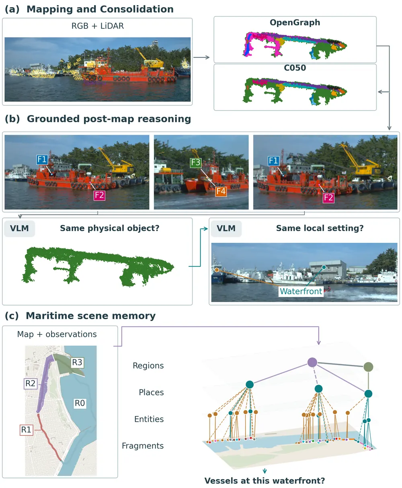
무슨 문제인가
3D scene graph(3DSG)는 기하와 의미를 함께 담아 로봇에게 오래 유지되는 지도를 주지만, 기존 방법은 실내나 육상 환경을 전제로 만들어짐. 실내는 방과 층으로, 육상 야외는 도로와 차선으로 계층을 나누는데, 무인 수상선(ASV)이 다니는 운하와 항구에는 이런 구조가 맞지 않음. 같은 수역을 반복해서 다니는 선박은 고정 구조물과 잠시 머무는 선박을 구분해 기억해야 함. 그런데 육상용 open-vocabulary 3DSG 가운데 어느 층이 해상으로 그대로 옮겨지고 어느 층을 고쳐야 하는지는 확인된 적이 없음.
어떻게 푸나
저자는 야외용 RGB-LiDAR open-vocabulary 3DSG인 OpenGraph의 인식·지도 작성 부분을 그대로 쓰고, 그 결과물을 사후 처리함. 입력은 위치가 맞춰진 RGB와 LiDAR 관측이고, OpenGraph가 이를 형상·의미 속성·관측 이력을 가진 지도 조각(fragment)들로 만듦. 첫 단계 C050은 bounding box 간격, 의미 feature cosine 유사도, 점 겹침 비율 기준을 모두 넘는 조각 쌍만 합치는 보수적 통합임. 다음 단계에서는 남은 후보 조각 묶음을 기록된 RGB 영상 3장에 다시 투영해 번호를 붙이고, VLM(GPT-6 Astra)이 같은 물체인지 제안한 뒤 따로 검증해 물리적 개체(entity)로 묶음. 같은 방식으로 영상 6장을 보여 주고 선박을 뺐을 때 남는 고정 시설이 무엇인지 물어 개체와 관측을 지역 장소(place)로 묶음. 이와 별도로 OpenStreetMap 지도와 카메라 수면 마스크, LiDAR 구조물 증거를 2m 격자에 모아 수로 폭 변화를 기준으로 큰 해역(macro region)을 나눔. 마지막으로 두 운항에서 따로 만든 장소를 고정 시설 voxel의 겹침 비율로 서로 짝지음.
결과
- MUT(항구 환경 해상 추적 데이터셋)의 평가용 남쪽 강변 선박 50척에서, 복원된 선박 하나당 평균 노드 수가 OpenGraph 1.957개에서 1.298개로 내림. 여러 노드로 쪼개진 선박은 25척에서 11척으로 줄었고, 복원된 선박 수는 46척에서 47척으로 거의 같음.
- 같은 비교에서 C050만 쓰면 노드 수가 1.413개, 쪼개진 선박이 15척임. VLM 단계가 기하·의미 통합만으로 남는 조각을 추가로 줄인 것으로 보임.
- Pohang Canal Dataset(약 7.5km 운하를 반복 운항한 자료)의 두 운항 P00과 P03에서 장소를 따로 만들고 비교함. 10개 지역에서 양방향으로 일치하는 장소 대응 12쌍을 얻었고, 두 운항의 큰 해역 나눔이 공통 수면 격자에서 얼마나 일치하는지 잰 ARI는 0.965임.
- 사람이 검토한 질의 검색에서 계층 표현의 평균 F1이 단일 운항 질의 20개에서 0.787로, 위치 반경 baseline의 0.487보다 높음. 두 운항을 함께 묻는 질의 4개에서는 0.810 대 0.378임.
한계
평가는 데이터셋 두 개와 운항 두 번에 그치고, 검색 평가는 질의 24개(두 운항 질의 4개)라 표본이 작음. 큰 해역은 OpenStreetMap 지도에 기대며, 이동하는 물체는 다루지 않고 두 운항이 같은 world frame에 있다고 가정함. 지도 작성 후 사후 처리 방식이라 온라인 동작은 보이지 않았고, 원문에 코드 공개 주소가 없음.
누리랩 연구와의 연결
- 지도 조각을 기록된 영상에 다시 투영해 VLM에게 같은 물체인지 묻는 방식은 scene graph 기반 robot memory에서 객체 중복을 줄이는 사후 처리로 그대로 옮겨 쓸 수 있음.
- 고정 시설로 장소 정체성을 정하고 움직이는 물체는 상태로만 다루는 설계는, 반복 방문 환경에서 장면 변화를 감지하는 memory 연구의 비교 대상이 됨.
15
45점
One Trajectory, Two Requirements: Accuracy and Local Stability in Euler Sampling for Flow Matching Policies
VLA
relevance 9/10
CoRL 2026 채택
Machine Learning (cs.LG)
flow matching policy의 Euler step 수를 정할 때 끝점 정확도와 국소 안정성이 서로 다른 요구치를 낼 수 있음을 통제 실험으로 보이고, 고정된 π0.5-LIBERO에서는 어느 쪽이 step 수를 정하는지 점검함. 입력 30개 모두 안정성 조건을 넘지 않았고, 입력 5개에서 필요한 step 수는 정확도 기준에 따라 5% 오차에서 4~9개, 1% 오차에서 87~112개로 정해짐.
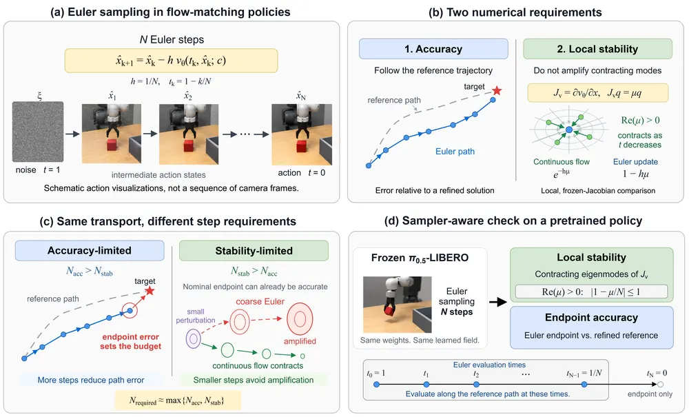
무슨 문제인가
π0 계열 VLA는 noise에서 action chunk까지 학습된 ODE를 Euler로 적분해 행동을 만들고, step 수는 보통 오프라인에서 끝점 오차를 재어 하나로 고정함. 그런데 관측, 로봇 상태, 언어 지시, noise가 달라지면 적분 궤적과 그 위의 Jacobian도 달라짐. 끝점이 정확해도 궤적 주변에서 빠르게 수축하는 방향이 있으면, step이 클 때 Euler가 그 방향의 작은 섭동을 오히려 키울 수 있음. 끝점 오차만으로 고른 step 수가 이 국소 안정성 요구까지 만족하는지는 따로 확인된 적이 없음.
어떻게 푸나
저자는 필요한 step 수를 정확도 요구치와 안정성 요구치 중 큰 값으로 봄. 정확도 요구치는 RK4로 정밀하게 푼 끝점과 Euler 끝점의 상대 오차가 허용치 이하로 계속 유지되는 최소 step 수로 정의함. 안정성 요구치는 Jacobian 고유값 µ 중 수축하는 mode에 대해 Euler 배율 |1−µ/N|이 1을 넘지 않는 최소 step 수로 정의함. 여기서 χ(t)는 시점 t에서 수축 mode가 요구하는 국소 step 수임. Euler 시점은 정수 m≥1에 대해 t=m/N으로 쓸 수 있어, t·χ(t)≤1이면 그 시점에서 χ≤N/m≤N이 성립함. 그래서 N마다 다시 계산하지 않도록 G(t)=t·χ(t)라는 척도를 둠. 모든 t에서 G≤1이면 어떤 N에서도 수축 mode가 커지지 않음. 검증은 세 단계임. 먼저 정확히 풀리는 2차원 ODE를 보고, 다음으로 학습된 2차원 flow 모델 6개(목표 분포 2개 × 학습 seed 3개)에 수축 좌표 하나를 덧붙여 봄. 마지막으로 가중치를 바꾸지 않은 π0.5-LIBERO checkpoint를 봄. π0.5에서는 320차원 action-flow 상태의 Jacobian 고유값을 JVP와 Arnoldi iteration으로 추정함.
결과
- 정확히 풀리는 2차원 ODE에서 허용 오차 0.2일 때, 가속 계수 β=0.1, 수축률 κ=50이면 정확도는 1 step으로 충분함. 같은 조건에서 안정성은 25 step을 요구함. β=10, κ=1이면 반대로 정확도가 25 step을 요구함. β∈{0.1, 10}, κ∈{1, 50}의 네 조합 모두에서 1~128 step 전수 실험이 이론값과 일치함.
- 학습된 flow 모델(Eight-Gaussians: 원 위 8개 Gaussian 분포, bistable Langevin: 이중 우물 확산 분포)에 κ=50 수축 좌표를 붙임. 원래 궤적은 바뀌지 않음. 5% 오차 기준 끝점 정확도는 Eight-Gaussians에서 18 step, Langevin에서 약 22 step에 충족됨. 안정성 기준 때문에 필요한 step 수는 25로 오름. 안정성 경계인 25 step 바로 아래에서 덧붙인 수축 좌표 방향의 섭동은 6.83배로 커짐.
- 고정된 π0.5-LIBERO에서 LIBERO-10(시뮬레이션 장기 조작 과제 10개) 과제마다 입력 3개, 총 30개를 봄. 최대 G 값은 0.5088~0.5252로 모두 경계 1 아래임. task 00의 전체 320×320 Jacobian에서 χ는 t=1의 0.51에서 t=1/32의 16.41로 커지지만, 실제 Euler 시점 기준으로는 조건을 넘지 않음.
- 정확도를 함께 잰 입력 5개에서 필요한 step 수는 5% 오차에서 4~9개, 2%에서 27~39개, 1%에서 87~112개임. 같은 입력의 최대 G 값은 0.5088~0.5171로 거의 변하지 않음. 저자는 이 입력들에서 step 수가 정확도로 정해진다고 해석함.
한계
안정성이 step 수를 정하는 경우는 사람이 수축 좌표를 덧붙인 통제 실험에서만 보였고, 실제 사전학습 policy에서는 관찰되지 않음. π0.5 분석은 시뮬레이션 rollout 초반 입력 30개, noise 1개뿐이고 정확도 측정은 입력 5개뿐임. 고유값은 일부만 표본으로 계산했고 t<1/32 구간은 다루지 않으며, 오차 1%가 과제 성공률에 미치는 영향은 재지 않음.
누리랩 연구와의 연결
- VLA의 flow matching 추론 step 수를 줄이거나 시점마다 바꾸는 efficient inference·test-time 연구에서, step 수 판단을 끝점 오차와 국소 안정성 두 기준으로 나누어 점검하는 도구로 쓸 수 있음.
- action-flow ODE의 Jacobian 고유값을 JVP와 Arnoldi iteration으로 추정하는 절차는, policy 출력이 noise와 입력 섭동에 얼마나 민감한지 재는 failure 분석에 참고할 수 있음.
오늘의 흐름
- World Action Model의 계산량 줄이기: video diffusion으로 미래 장면과 action을 함께 만드는 모델에서, 미래 장면을 얼마나 만들지 줄이는 논문이 셋 나옴. action·proprioception·value 같은 로봇 신호를 latent frame 하나에 합치거나(MetaWAM), 접촉 중심 latent만 예측함(LaST0.5). 상태마다 미래 영상의 denoising step 수와 다시 계산할 영역을 고르기도 함(Elastic-WAM).
- action label 없는 데이터에서 action 표현 얻기: 사람 영상과 다른 로봇의 데이터를 공통 action 공간에 놓으려는 시도가 이어짐. OnlyAct는 사전학습 video encoder를 action 쪽으로 조정하고, Ego Guidance는 1인칭 영상의 미래 feature 예측을 보조 과제로 씀. CIALLO는 로봇별 embedding과 공통 intent로 action을 나누고, DexSeed는 사람 손 시연을 시뮬레이션에서 늘려 dexterous VLA 데이터를 만듦.
- VLA benchmark 점수 다시 읽기: 점수가 실제 능력을 재는지 따지는 진단 논문이 나옴. kNN 기준선은 학습 없는 시연 검색만으로 LIBERO(시뮬레이션 조작 benchmark) 평균 성공률 91.7%를 얻음. memory VLA 진단은 memory가 사건 대신 흐른 시간을 센다는 것을 보임. Euler step 분석은 flow matching policy의 step 수를 정확도와 안정성 두 기준으로 나눠 점검함.
- 고정된 모델 위에 작은 모듈만 학습해 적응하기: 큰 policy나 world model은 그대로 두고 작은 부분만 배우는 방식이 여럿 나옴. ExRL은 chunk 중 몇 step을 실행할지만 배우고, residual world model 적응은 상호작용 3 episode로 dynamics 변화를 보정함.
- 로봇이 쓰는 3D 기하와 장면 기억: UGG는 RGB, depth, camera pose를 한 diffusion 모델에서 생성함. 선박 운항용 scene graph memory는 반복 운항에서 같은 물체를 묶어 기억함. PhysMoE는 VLM이 좌표를 token 하나로 바로 출력하게 함.
해볼 만한 연구
사건 단위로 쌓는 memory VLA
- 질문: frame을 시간 간격 대신 상태 변화가 생길 때만 memory에 넣으면, 멈춤이 끼어들어도 반복 횟수 과제의 성공률이 유지되는지 밝힘.
- 첫 실험: RoboMME(memory를 시험하는 조작 benchmark)의 PickXtimes(정육면체를 K번 옮긴 뒤 버튼 누르기)에서 시간 간격 sampling과 물체 위치·접촉 변화 기반 sampling을 비교함. 멈춤 길이를 0초, 5초, 10초로 바꿔 과제 성공률을 잼.
- 가장 가까운 연구: memory VLA 진단은 문제를 진단하고, 멈춤 구간을 memory에서 빼는 방법만 시험함. 이 연구는 상태 변화 검출로 memory를 쌓는 방법 자체를 만듦.
world model 예측 오차로 실패를 감지하고 바로 복구하기
- 질문: 배포 중 world model의 예측 오차가 커지는 시점을 failure 신호로 쓰고, 같은 오차로 residual 모듈을 고치면 실패 직후 복구까지 이어지는지 밝힘.
- 첫 실험: 무게중심을 바꾼 상자 밀기에서 오차 임계값 기반 감지와 진행도 value 기반 감지를 비교함. 감지 시점, 오탐률, 복구 후 성공률을 잼.
- 가장 가까운 연구: residual world model 적응은 실패 감지 없이 3 episode를 모은 뒤 적응함. LaST0.5는 진행도 value로 재계획만 하고 모델은 고치지 않음.
chunk 실행 길이 critic을 failure 예측 신호로 쓰기
- 질문: 실행 길이를 고르는 critic의 값이 낮아지는 시점이 실제 실패보다 먼저 오는지 밝힘.
- 첫 실험: LIBERO에서 고정 π0.5와 ExRL critic을 함께 돌리고, critic 값과 이후 실패 여부의 관계를 AUROC로 잼. 같은 rollout에서 action 분산 기반 감지기와 비교함.
- 가장 가까운 연구: ExRL은 critic을 실행 길이 선택에만 쓰고 실패 예측력은 재지 않음.
꼭 읽을 논문
- Is Your Robot's Memory Just a Clock?: memory VLA를 평가할 때 바로 가져다 쓸 수 있는 진단 절차가 있음.
- ExRL: 고정된 VLA를 다시 학습하지 않고 실행 길이만 배워 online 적응하는 방법임.
- How Much of Your VLA Is kNN: LIBERO 성능을 주장할 때 함께 보고할 학습 없는 기준선을 제공함.
- Few-Shot Residual Adaptation of Pretrained Latent World Models: 예측 오차만으로 world model을 실로봇에서 적응시키고, 예측 오차가 줄어도 제어 성공률이 함께 오르지는 않는다는 결과를 보임.
- LaST0.5: 접촉 중심 latent와 진행도 기반 재계획을 함께 쓰는 World Action Model임.